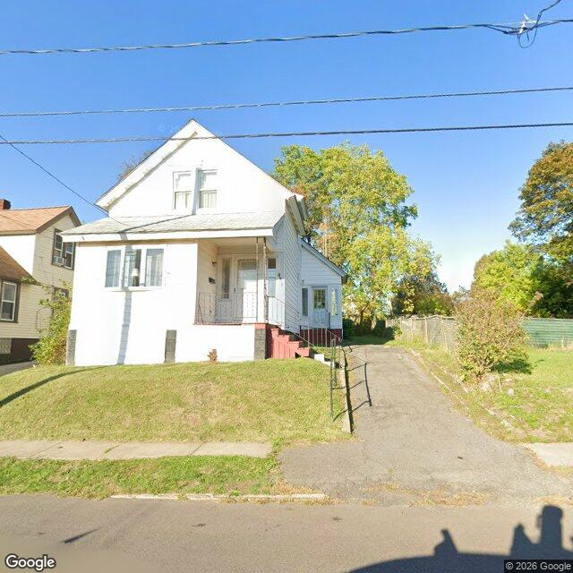

Property entry
212 Hood Ave
Published 2026-10-25T23:04:13+00:00
Parcel key: 005-02-680

City records
Matches use parcel IDs, normalized addresses, or nearby coordinates. Confirm a match against the source record before relying on it. Publication dates are not source-data dates.
Vacant properties 0
No matches stored for this feed. The feed or address matching may be incomplete; this is not confirmation that no records exist.
Rental registry 0
No matches stored for this feed. The feed or address matching may be incomplete; this is not confirmation that no records exist.
Code violations 0
No matches stored for this feed. The feed or address matching may be incomplete; this is not confirmation that no records exist.
Unfit properties 0
No matches stored for this feed. The feed or address matching may be incomplete; this is not confirmation that no records exist.
AI image observations (unverified)
These observations are generated from an image, not an inspection or an official code finding. No human verification is recorded here.
Image capture date: Not recorded. The entry publication date does not establish the age of the image.
Automated image description
The visible exterior of the property features a two-story residential structure with white siding, a front porch with red-painted stairs, a paved driveway, and a grassy front yard.
Property type guess: single_family
Visible conditions
- The property has a two-story residential structure with white siding.
- A gable roof is visible at the front of the structure.
- There is a front porch with a white entry door and metal railings.
- The porch is accessed by red-painted wooden stairs, which show signs of chipping paint.
- Some discoloration or staining is visible on the lower foundation or skirt area of the house.
- Windows appear to be present and intact.
- A paved driveway is located on the right side of the property.
- The front yard is primarily grass, with some areas exhibiting taller grass or weeds.
- A shrub on the right side of the property appears somewhat unmanaged.
Condition scores
- Porch Or Entry
- fair
- Roof
- fair
- Siding Or Facade
- fair
- Trash Debris
- none_visible
- Vegetation Overgrowth
- minor
- Windows Doors
- good
- Yard Or Lot
- fair
Visible flags
- Active Construction Visible
- no
- Boarded Windows Or Doors
- no
- Fire Damage Visible
- no
- Structural Damage Visible
- no
- Vacancy Signs Visible
- no
Possible image-only flags
- Chipping paint is visible on the red porch stairs.
- Discoloration or staining is present on the lower foundation/skirt of the house.
- Areas of the front lawn show unmanaged grass and weeds.
- An unmanaged shrub is visible on the right side of the property.
AI review boxes
- Chipping paint on stairs: The red paint on the porch stairs appears to be chipping.
- Foundation discoloration/staining: The lower foundation/skirt area of the house shows visible discoloration or staining.
- Unmanaged lawn vegetation: Portions of the front lawn exhibit taller grass and weeds, indicating minor overgrowth.
- Unmanaged shrub: A shrub on the right side of the property appears to be unmanaged.
Review reasons
- Possible image-only issue
Image quality
- Available
- True
- Bytes
- 81026
- Needs Rerun
- False
['The image provides a street-level view, limiting visibility of the rear and some side aspects of the property.']
ACS tract context
Census Tract 4; Onondaga County; New York
- Housing units
- 1534
- Median gross rent
- 130600
- Median household income
- 66250
- Poverty rate
- 27.6
- Renter-occupied share
- 71.7
- Total population
- 4042
- Vacancy rate
- 4.6
OpenStreetMap nearby
meter search radius
OpenStreetMap lookup failed: HTTP Error 406: Not Acceptable